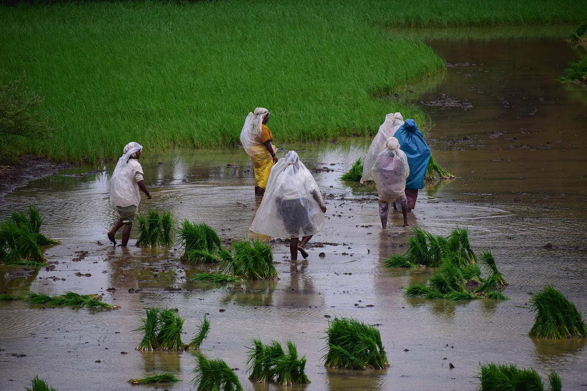
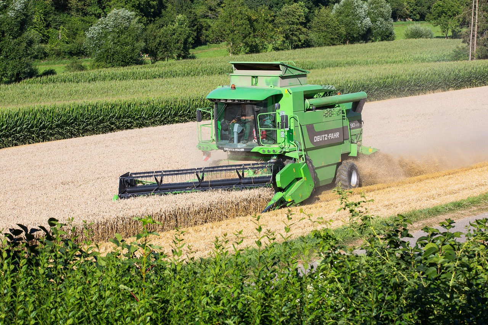

Rooted in Agriculture, Growing with Farmers 👨🌾
Supporting farmers with knowledge, guidance, and sustainable agricultural solutions.
🌾We are dedicated to empowering farmers by sharing reliable agricultural information, 🌱crop guidance, and modern farming practices. Our mission is to strengthen rural livelihoods and promote sustainable agriculture for a better tomorrow 🌎.
Standing with Farmers at Every Step..



Mission
Our mission is to empower farmers by providing accurate, practical, and easy-to-understand agricultural information. We aim to support farmers at every stage of farming by sharing knowledge about crops, seeds, fertilizers, pest management, and modern farming techniques. Through our platform, we strive to bridge the gap between traditional farming practices and modern agricultural innovations. We believe that informed farmers make better decisions, leading to higher productivity, improved soil health, and sustainable farming. Our goal is to strengthen rural livelihoods by promoting eco-friendly and cost-effective farming solutions.
Vission
Our vision is to create a strong, self-reliant, and well-informed farming community. We aim to connect farmers with modern agricultural knowledge, technology, and best practices to improve productivity and income. By promoting sustainable and eco-friendly farming methods, we want to protect natural resources for future generations. We believe that timely and accurate information can help farmers make better decisions and reduce risks in agriculture. Through continuous learning and innovation, our goal is to make farming more profitable, efficient, and respected, while supporting the overall development of rural communities and encouraging young farmers to adopt smart and responsible agricultural practices for long-term growth.
History
Our journey began with a simple goal—to support farmers by sharing the right agricultural knowledge at the right time. What started as a small effort to guide local farmers gradually grew into a trusted platform for crop information, seasonal guidance, and modern farming practices. Over the years, we have focused on understanding farmers’ challenges and providing practical solutions to improve productivity and income. With a strong connection to agriculture and rural communities, our history reflects dedication, learning, and continuous growth. Today, we continue to stand with farmers, helping them adapt to changing agricultural needs and build a sustainable future.z